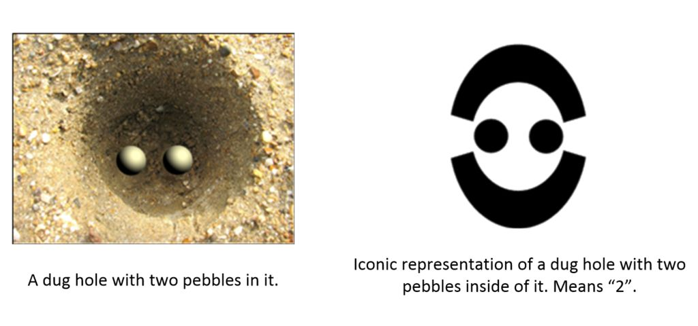
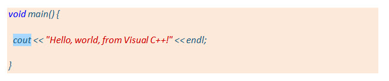
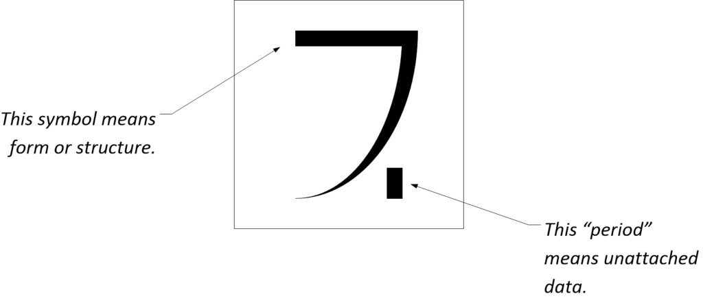
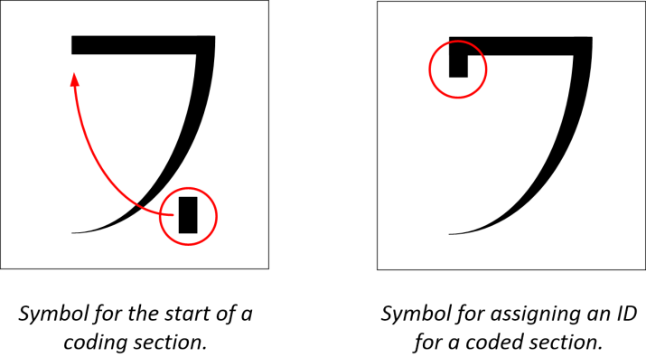
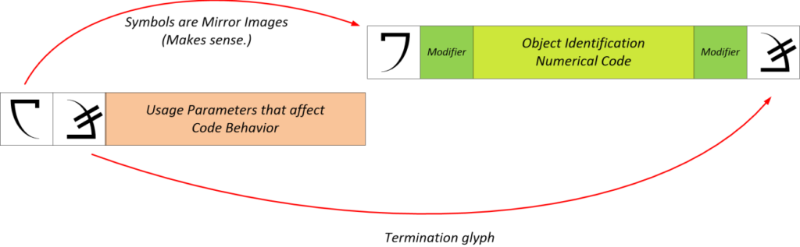
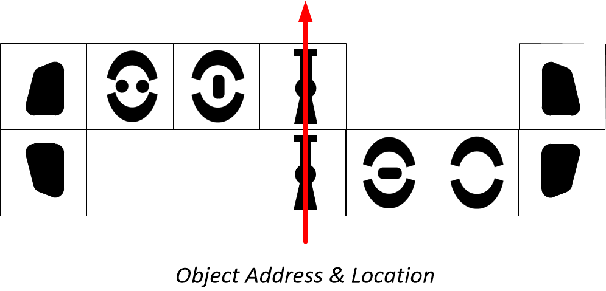
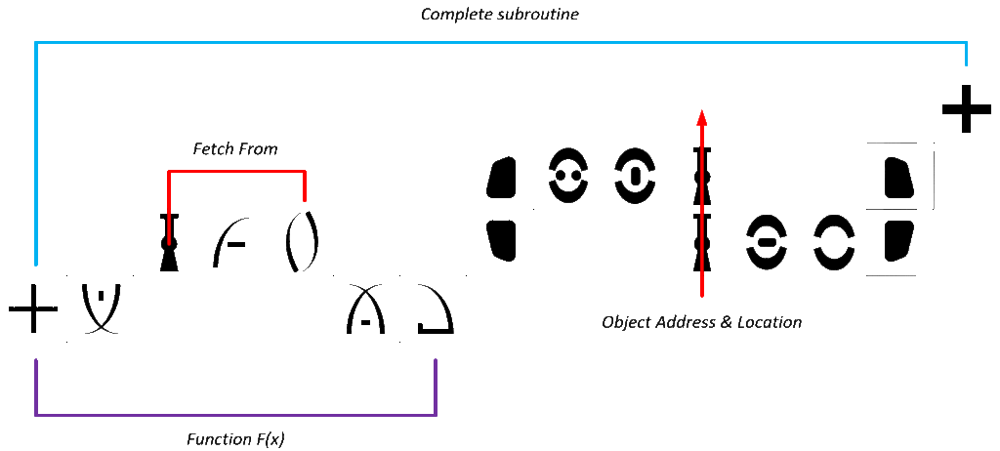
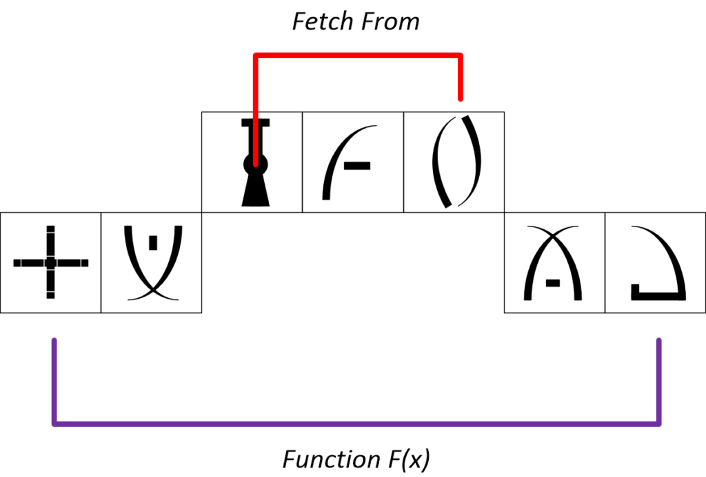

This is part two of a two part post. It concerns the calibration and training that I was part of . I needed this training to complete my mission parameters as part of MAJestic. Now, of course, none of this is supposed to exist. You can go anywhere on the Internet and type in “majestic” or “MJ-12”, and the first fifty or so sites will all be about it being a hoax or something that appeals to the “tin foil hat” fringe. You can believe them, right? After all, everyone knows that you can trust Google. You can trust them like you can trust CNN.
Anyways, if you believe them you don’t belong here. You can go away. Don’t waste your time here. Because it WILL be a waste of your time. There are no “secrets” or extraterrestrials out there in outer space. It is all just delusion. Right? Now, fucking leave. Thank you.
Navigation
This is Part #2 of a two-part blog post. To read Part #1, please go HERE.
Background
This post discusses a period of specialized training that I underwent in support of my role within MAJestic. It concerns “calibration” and “adjustment” exercises for a number of probes and devices that were implanted inside my brain. These devices consisted of three “sets”. One set, was extraterrestrial in nature and performance. The remaining two were terrestrially derived MAJestic implants.
All of the “training” and calibration exercises could ONLY be conducted within a specialized chamber, while all three probe “kits” were engaged.
Programming
There was a certain degree of “programming” I had to be involved in. I do not think that this had anything to do with the terrestrial core kit #1 or #2 probes. Rather, I think that it had to do with the interface with the core kit #2 probes and the base extraterrestrial probes. I was not instructed in the entire programming language. I was only taught the bare minimum of what I needed to know.
Numbers
For starters, instead of numbers, two means of conveyance are used. [A] Numbers were conveyed using a set of funky “O” shaped symbols (It was a base-8 octal system using (from what I can tell) seven symbols plus an “empty” symbol. Though I can be wrong, after all that was all many decades ago.) when used to identify a location or object. When used to convey an amount of a measure, [B] a set of lines were used. The lines looked like a comb, and could be presented in either a straight, curved, overlaid or stacked appearance. The closer together the lines were to each other was a measure of the mathematical power of the value. The height of the lines denoted proximity and / or magnitude. However, at no time were any words or sentences visible. It was all graphic.
The numbers were not based on a base-10. They were based on a base-8 system. (Luckily for me, I learned how to compute using base-8 in Middle School. Seventh grade, maybe eighth grade, I believe.) I suppose that my eighth grade teacher would have a heart attack, knowing what I was using what they taught me, for.
Cut-scene
As strange as this might seem, while under the ELF field, I underwent a “cut-scene” image of why the icons looked like they did. The reader must remember that, at that time, cut-scenes did not exist except in movies. I went through an event that was very much like a cut-scene in a video game. However, as I witnessed or viewed the scene, it was as if it was a memory to me.
This is how I learned. This is how I was taught how to use the symbols.
In the “cut-scene”, I could see a short hand with three very long fingers. (One thumb and three long fingers. The fingers were similar to our own human fingers, but much longer. Perhaps twice as long! They had fingernails, and knuckles, and a smooth complexion.) The hand hovered over some (highly reflective) soft tan sand on a very bright yellowish day.
It was like everything was sepia (Sepia tones are used in photography; the hue resembles the effect of aging in old photographs, and of older photographs chemically treated either for visual effect or for archival purposes. Most photo graphics software programs and many digital cameras include a sepia tone option.).
Then, very slowly, the index finger made long (easy and relaxed) movements in the sand. It went down and traced a long slightly curved line in the sand. Then the hand went and made another line perpendicular to it, and yet another, and finally depressed it’s long finger in the sand. That action made a “dot” that had a longish (miniature “I”) shape.
That was how and why many of the icons had long easy curves. It was a naturally easy thing to do. That is why the icons look like they do. They duplicate the writing method of the “parent species” that devised this system of pictorial icons.
That is how I learned. I “participated” in memories that instructed me as to what the symbols represented and why.
For numbers, the (four fingered) hand took the index finger and pressed it into the sand. It then dug a shallow hole with the hand. Then, it went and dug another shallow hole, but this time it put a pebble in it. Again, it went and dug another shallow hole. This time it put two pebbles in it. This continued until there were eight holes. Each hole was filled with pebbles or a oriented “dash” that was representative of them. Thus, the iconic depiction of an “O” was really a representation of the hole, and whatever was placed inside the hole.

They based their numerical system on their eight fingers. Much like we based our numerical system on our ten digits (four fingers and a thumb on each hand).
Graphic Icons
Everything was in graphics through the use of graphic icons.
This wasn’t any kind of programming language using words as we would use today (in Basic, Java, C++, or Pascal). In computing languages today, they use commands that were derived from English words. This was NOT the way my graphical program worked. Here is a typical C++ line of code;

Things were quite different. No derived English words were used. Graphical pictures or symbols were used instead. For instance, functions came between these funky brackets that looked like a cross between fat bumper-car bumpers and a colon ( : ). Control of physical properties of physical items was denoted by a kind of bent “L” shape. Control of the material behaviors of specific elements (the “defaults” that we ASSUME are fixed in this universe ruled by the laws of physics) were denoted with a group of two symbols that reminded me of an “S8” appearance.
Orientation of the symbols was critical. There were also post and pre command modifiers that would affect the function within the brackets. Commands within the It was a coding language not unlike APL, but instead of automating functions, it created “ladder diagrams” to control the operation of various aspects of my implants.
Most of what I was involved with involved the selection of range modifiers for set controls. I didn’t actually write control stack language. However, I could as the option was there, but it was way, way beyond my skill set and ability. Instead I only knew the basics and adjusted what I was directed (by the facility manager) to adjust.
In function, he was simply reading to me over the microphone. I would then confirm when I had completed the instruction. I would imagine that the facility manager was simply reading typed instructions from a document to me, without any comprehension, what he was reading. Then, once completed, he more than likely shredded the document.
In every instance, I was able to do the exercises that were presented to me. I was able to run diagnostic scans, operate the limited debugging tools provided, switch in and out of secure communication links, secure a command and lock it in place. I was able to make certain abilities “soft” and then “harden” them into place, where necessary (float above and then sink into clay). Unlike conventional windows, no pop-up window or box ever appeared. Instead, the indicating icons would appear overlaid on the base overlay. Strangely enough, this never obscured the working desktop presented in front.
Once I completed a specific sequence, a new image would fill my visual cortex. I would need to complete the entire new sequence before I could exit. In other words, there was no “abort” key, or “exit” command. I do not know why this is (was) the case. Once a sequence was set in motion, I had to go through the entire sequence before I could exit it. Otherwise, it just sat there waiting for me to do something.
The calibration segment consisted of setting up presets and learning the basics on how to individually program the probes within an ELF environment.
Setting Up Presets
Setting up the presets was very easy as most of the presets were already set in place. All I needed to do was make minor corrections. These tended to be a matter of degree. For instance, one of the presets revolved around the scope or amplitude for the field. I had set it “close”, but later on, during my retirement, I wanted it to be more comfortable, and I changed the setting with the techs that came to retire me. Like stated previously, it was just a simple matter of moving a hovering or floating reticle over a specific setting and then hardening it into “clay”.
The presets were probably the most critical part of this segment. Programming wasn’t really ever used. (Once, I modified the code to enable entanglement.) In fact, I can honestly say that I never used the programming as part of my role. So, it really didn’t make much sense to train me to be able to access the “source code”. It was simply a great coincidence that I had the ability to reprogram the probes.
Programming
In general, in programming the various features of the probes, I had to learn to conduct rough “function chains”. These were just ladder diagram commands. They were identified with a start command symbol (looked like a big plump four-pointed star) and ended with an end command which kind of looked like a leaner and smaller four-point star. (Yes, I know the symbology is odd.) However, this was not always the case, while line functions always started with the “big star”, it could be “open ended”. That means that there would not be a closing “small star”. Instead, a “goto” command would exist. There were numerous icons for this command depending on what the function would go to next.
Unlike conventional programming, which runs in a line from left to right, I was taught to program from bottom upwards. Once completed, the program line would be presented in a horizontal fashion. It was read right to left. In other words, the “big star” icon would be at the far right, and the “small star” icon would be at the far left.
Further, the “surface” that this programming took place on was not flat. It was not like a piece of paper, a computer printout, or a nice organized surface inside a monitor. It was three dimensional. Elements or sections of “code” could be moved forward or backwards relative to my point of view. Thus, if I were to take a two-dimensional snapshot of the programming, you could see code in different sizes. From HUGE code “up front”, to unbelievably tiny code way in the back.
There were “objects” or “features” that I could manipulate. These looked like orbs, balls or concentric circles. They were connected to other “objects” through the use of lines. The lines would follow the curve of the larger objects that the smaller objects would be part of.
On top of all this, the programming was not in front of a monitor. It was all in my head. It was conducted while I sat down on the chair inside the ELF chamber at China Lake. The way these symbols materialized and moved about was by thought. Each one had an associated “feel”, “presence”, or “memory” (for lack of better terms) that I could “understand” and which helped me use the symbols. When I focuses on the component symbol, I would also access the associated “memory” or “abilities” that it possessed.
To me, they “felt” like thick cookies that fit together like dominoes. There were laws or rules that restricted placement. It was sort of like moving magnets around each other. The feelings, understandings and movements of the component glyphs only lased while my attention was focused on them.
Components
Within this command sequence were two major components. This consisted of [1] the program action itself, and [2] the objects to modify or manipulate. The objects to modify were themselves placed within a kind of bracket system that looked like plump baby bumpers. The objects themselves can either [1] be “named” by use of these kind of funky “O” shaped designs, or be [2] a set process that is described using other characters. Often these other characters would look like (backwards) curvy “L” or other odd shapes. Often, but not always, these objects were associated with a “position” within another process. In this case, they would utilize a queue icon (location within the ladder chain), which looks like a capital “I” with a dot in the middle of it.

Naming of Objects
Each probe had a specific name (address or location finder) associated with it. When a given function would access the probe or groups of probes, a set object identification pattern would manifest. It would always be between the two (plump baby bumper) bracket icons. This can be [1] assigned or [2] accessed as part of another function. When assigned, the first line of “code” always specifies these objects first. Usually they were graphically larger than the rest of the code. When displayed horizontally, it was read left to right.
To the left of this object assignment, was an “assign object” code. It was always smaller in font text. It would consist of two icons. A “start assignment” icon which looked like a backward “L” (with a curved backward back) with a little “foot” (at the left end) that was upside down. This icon was also present to the left of the code that enumerated the objects identification code. Only it was a mirror image. The second icon was a “end assignment” icon. It looked like a backwards “L” with a curve backwards with an equal sign though it. It also was at the end of the object naming.

Example of assigning an object code
Here is the basic format that we used when assigning a code for a group of objects. This can be anything from a single individual probe, to a group of multiple probes, to a specific characteristic of a device or artifice.

As described previously, when assigning a particular identification to an object or function, it is made larger than the rest of the code. Further, it is preceded with a command that specifies that it is being made. The “to make” command has associated parameters associated with it. A specialized set of “brackets” are used to identify what is going on and why.
Throughout the programming code, the use of a given sequence of icons can be referred to or modified by the start-condition parameters as defined within the object / process definition segment.
Here is an example of assigning a numerical code within a pipeline of the process tree. Note that the entire location or “address” is identified by two thick “baby bumper” icons;

Functions
After the object, came the function. Many of the symbols used in the functions were easily understandable. For instance, a backward “L” (with a curved backward back) with a little “foot” (at the left end) would be “click” then an icon that looked like “two curved swords over a road”(like in the city of Baghdad) would mean “hold” This might be followed by an icon that would look like a stylized equal sign at a 45-degree angle would mean “share” or “interface or act” Finally, an icon that would look like a slash (an oblique slanting line) stylized with a dash next to it would mean “release”. This entire command sequence must be programmed into the system to work, so you would place a queue icon (that looks like a capital “I” with a dot in the middle) next “queue”.
Command Nomenclature
Commands would be read right to left instead of left to right like in English. So the command above is a simple “FETCH” command broken down into a series of icons. Like all functions, f(x) you need to specify the variable (x) or the object that will be modified by the command. This is placed within brackets (big fat ones like baby bumpers) before the function.
You “engage” the process by the “click” command, and then let the process actuate under the “hold pause and continue” command. It works a lttle like a “one shot”. Once the process is completed it then interfaces or runs or collects functions or data. This is the “share” command. Once the task is completed, you “release” of course. The entire process needs to be programmed, so you “queue” with respect to another action. Where and how it performs depends on the relationship of adjacent icons. In the example below, I used an “open arms” icon that means “accept input”, or in other words, I have to specify, what the values would be (or tie to another function that would provide those values).
Example
For instance, the below shows a very simple use of the fore mentioned fetch command. Here, one of the (characteristics) of one of the probes (identified by name, and shown to be part of a process queue) utilizes the fetch command to interface with another process. It assigns properties based upon a list of options. (The options come from the queue index in the object section.)

In the example above, we can see that the entire sub-program is a function. It references a location in the ladder diagram. This location is positioned between the two “baby bumpers” with a queue index icon in the middle of the location address. Then the actual code is specified. This is the function section. Finally, the entire sub-function is identified with a start and an end star.
When looking at the entire programmed function, the first thing that you can see near the end of the function is the objective of the function. Then to the right is the actual sub-program function. Finally the object to be programmed, or the sub-program that is to be modified.

The entire set of implants contained reams and reams of codes like this. However, access to specific lines of code was easy. You simply thought about what you wanted to do, and relevant code would appear. For instance, if I wanted full access to all of my memories, I would just simply think about “assess the code associated with my memories” and it would appear. Like all the code, the values for the objects and address location were pretty much meaningless to me. However, I did “understand” what they represented when I thought about it.
Strangely, I thought about it in a kind of 4D manner. I could imagine it moving and changing with different values and aspects as I thought about the function. It was cool, neat and baffling all at the same time. Specific icons (and the associated values and functions) could also be changed. However, if I wanted to change something that might be prohibited for some reason, I would not be able to change anything. There seemed to be a sort of “fail safe” editing command structure inherent in the program.
Initially, I gave a lot of thought as to what this was all about. After all, even though I now was able to retain my memories of the implant procedure, I did not have a clue as to what the overall purpose or what my role would be.
A very abbreviated overview of operation
In short, the programming for the probes was mathematically based but used a system that was employed to control the functions of complex aggregate machine-like artifices. Thus, it was neither a pure ladder diagram, nor a software programing language. It was something altogether different. As my ability to program software is rather primitive, the terms that I use herein is mine own and should not be confused with standardized conventions. The reader should also recognize that my impressions are that of a technically trained engineer that only understood what I needed to understand at the time. I was not, nor was I ever, an expert in this. Additionally, the ravages of time have corrupted my memories and what I think is correct could very well be incorrect. Never the less, I place it here, for the reader to ponder, in it’s impure state.
Functions
A function is what the purpose of the devices do. They can be programmed to do different things. Since we were programming ELF probes, and their interface with a biological artifice, it would make sense that the programming would alter or control the aspects associated with this purpose. In short, a function is a software communication method that would program mechanical devices to behave in certain ways. For our purposes, lets define these “ways” as “functions”.
In general it would take (iconic) arguments (that bracketed the operation command on one or both sides) and would return a specific action as a result. The functions can be;
- Primitive – built-in and represented by a single iconic glyph. These icons had fixed operations and functions. They could not change or be modified by other functions or controls.
- Defined – as a named and ordered collection of program statements. This functional output is whatever is defined in the parameters established near the objects identification code, and modified by the proper modifiers.
- Derived – as a combination of an operator with its arguments.
Arrangement
The functions can be arranged in certain defined manners. These defined manners change the appearance of the specific code. In general, there are three different arrangements, each with a set or limited array of outcomes.
- Niladic– not taking or requiring any arguments.
- Monadic – requiring only one argument; on the right for a function.
- Unary – requiring only one argument; on the left for a function.
- Dyadic – requiring both a left and a right argument, binary.
- Ambivalent – capable of use in a monadic or dyadic context.
Whereas, in our software code we tend to have binary responses (yes or no), this software code results in far more options than that. Each option can be “flavored” by the associated parameters provided by the objects identification parameter settings.
Operators
We also have a system where you can go “backwards” and derive a function. Here, it would consist of a operation or mapping that takes one (left) or two (left & right) function or an array-valued argument (operands) and derives a function. An operator may be [1] Primitive: built-in and represented by a single glyph, or [2] Defined: as a named and ordered collection of program statements.
Control
Why all this programming if we were implanted to be a robot? Certainly slaves, or robots are not provided with the means for independent control. The reader must recognize that at this time, I still had no idea what my “purpose” was. While it was all pretty cool, interesting and exciting to me, I still had no idea what all this would lead to.
I initially thought that at the most basic level we were to become a robotic slave to the commands issued to us. We were, after all, allowing the person at the other end of the transmitter to control our brains and thus ourselves. Oh, how simple I was then!
That was not the case, we were more valuable than that. They really didn’t need to pull out highly trained Naval Aviators, who have mastered multiple degrees, passes rigorous testing, and meet difficult levels of achievement to turn them into brainless robots. You could do this in other ways and use other people who were not so expensively trained.
Remember, to train a Naval Aviator cost over a couple of million dollars, so we were too expensive to turn into a household appliance. Whether it be as a mindless zombie to pick up a gun and shoot up a school, or to innocently walk into a meeting room and stab a CEO of a company. You did not need the kind of background and training that we had to do these things. The skill level requirements did not match; they were incompatible.
That does not, however, mean that the ELF technology and system isn’t used for those other kinds of tasks and assignments. I can only adequately comment on MY role and how the technology was used concerning my own life. I am quite confident that the technology is also used for other assignments and tasks of a different clandestine nature than mine own.
So, instead of simply being a remote controlled cyborg, we were taught how to reprogram our mind under certain conditions using the ELF signals. We could communicate as if we had Wi-Fi always in our heads, and we had access to control of our bodily functions at a level that was unprecedented previously.
Materialists like Daniel Dennet, Richard Dawkins, and Sam Harris immediately dismiss the possibility of an immaterial soul or mind that interacts with the brain and the physical body. Ah, what is seen in the physical is all that there is. Nothing else exists. Oh sure, there are radio waves, but that too can be explained as a hidden component of the physical. They argue this on the grounds of classical physics. In this argument, the activity of the soul or any other immaterial entity, placing influences upon the brain violates the law of conservation of energy. They conclude that matter is the fundamental reality of human beings and of the entire Universe. They conclude that nothing else exists. Hogwash! What is often ignored today is how Dennet, Dawkins, Sam Harris and the materialists fail to realize that the universe is not so simple. It is comprised of many other things that require effort to understand. These lazy folk do not want to leave 1900-era science. Their entire argument for materialism and the denial of the soul is based on an outdated “classical physics” paradigm. This paradigm was overturned in the 20th century with the advent of quantum physics. The general thinking of many people, however, is still shaped by classical physics and for this reason alone, materialism seems like the most scientific worldview. It is not. Not by any degree of understanding. How in the world can you use a “smart phone” or an iphone and still hold this world view? Those appliances utilize quantum physics to operate gosh-dammit! Thus any comments in support of the materialist argument (against soul-body dualism) falls apart in the face of contemporary physics. Here’s a quick review. At the quantum level, subatomic particles like electrons do not exist concretely; instead, they exist in a state of potentiality. For example, the electron at the quantum level does not occupy a fixed position or a momentum. Instead, the electron occupies an entire range of possible positions – and the evolution of these possibilities over time can be described by a wave function called the Schrödinger equation. It is only the act of measurement or observation by a conscious observer that [1] assigns concrete probabilities to each possible position, and [2] selects one of the possible positions of the electron and actualizes this possibility as a physical event. Prior to observation, there is no “matter stuff” but only “possibilities”. Thus the key point; Material substance, as such, does not exist without an observation or act of human consciousness. Consciousness generates thought. Thought creates order of quantum potential. Ordered potential creates our reality. It is therefore nonsensical to argue that material substances, like the aggregation of atoms, molecules and neurons can produce consciousness. Material objects, prior to conscious observation, exist only as wave-like potentialities and nothing more. The act of observation or measurement by a conscious agent is what reduces the potentialities into actualities, as Schrödinger himself writes about some particle x when it is observed at position K – prior to which particle x has no definite existence except in a cloud of potentialities.
Ah, but I digress…
Big Changes
Now that’s about all there was to the programming section of my training. In the grand scale of things, it didn’t last very long. I was at the ELF facility for maybe a handful of months. I “awoke”, and was taught how to program. I then self-programmed my probes and set the required defaults. Then I was reassigned to work off-base.
Only this time, I received instructions and communication straight from the source. No one needed to tell me anything. I instantly “knew” what to do.
I started to see (feel) immediate changes in myself physically, mentally and emotionally. I learned, then (quite early) that you just do not mess around with certain things. What I was involved in was a serious business that could have negative consequences if you were not careful.
I learned quickly what my skill set was.
I also learned that there were multiple world-lines. As such, I was taught how to adjust world-line programming. This also included time, the passage of, and the (apparent) direction of it. However, each time I ran through the “episodes” associated with the reading by the ELF station manager, it seemed like preprogramed memories would describe what was possibly transpiring at the time the changes were made. It was almost like I was performing within a cut scene and living out the consequences of my activities. This included both world-line alterations and time manipulation.
The capability remained present. Why anyone would want to invoke changes in time is beyond my comprehension. However, it is possible under the proper conditions. Indeed, this aspect is something that even now I am really confused about.
Off Base
I learned and was trained to invoke certain sequences for “advantage”. This training was substantial and is the subject of another post. In short, I learned how to navigate the MWI using link-access.
Anyways…
Bullshit
According to the Internet, there isn’t any extraterrestrials, world-line travel is a hypothetical fantasy, probes inside the brain is a fantastic illusion brought about by people with mental illnesses, and the idea that the United States government would be involved in such things is considered fringe lunacy.
So, anyways, that’s about it for now. You can believe or not. I personally don’t give a flying fuck. If you want to believe that I spent my 1980’s wearing parachute pants, wearing a mullet, and watching “The Golden Girls”, so be it.
You can believe everything CNN tells you. You can believe all about Global Warming. You can believe that there are 55 genders. You can believe that you are not paying enough in taxes, and that more taxes are needs “for ma roads!”.
Good for you.
Anyways, thank you for reading this.
Take Aways
- There is other ways to learn things quickly.
- My probes were not passive devices. They are interactive devices that required programming and calibration.
- I can only program under the influence of an ELF field in a specialized chamber.
- The probes were terrestrial (human) in nature, and they interfaced with extraterrestrial probes that were also inserted within my brain.
- Retirement only disables my terrestrial probes. It has no effect on my extraterrestrial probes.
- The probes permit certain abilities and advantages.
- One such ability is MWI world-line travel.
FAQ
Q: Why did you have probes installed?
A: All members of MAJestic have probes installed. I had two “sets” or “kits” of terrestrial probes. The second kit interfaced with a special set of extraterrestrial probes that most MAJestic members do not have. This kit required a kind of specialized calibration and training.
Q: What was your mission?
A: I really can’t give out specific information. I can only talk in generalities. It was humanistic in nature. It supported the development of the human species in sentience growth. It was not like anything that the reader would think. It was actually pretty boring and dull. It was like selecting potatoes out of a truck-load of potatoes. It was nothing important at all.
Q: Who did you report to?
A: I worked independently and took commands from my probes and our extraterrestrial benefactors instantaneously.
Q: Have you ever used your programming skills since?
A: No. It was a one-time event. I learned how to mess around with the programming of the probes. I set up the defaults, and lived with the results ever since.
Q: Why do you say such nonsense?
A: Why do you read it?
MAJestic Related Posts – Training
These are posts and articles that revolve around how I was recruited for MAJestic and my training. Also discussed is the nature of secret programs. I really do not know why the organization was kept so secret. It really wasn’t because of any kind of military concern, and the technologies were way too involved for any kind of information transfer. The only conclusion that I can come to is that we were obligated to maintain secrecy at the behalf of our extraterrestrial benefactors.


MAJestic Related Posts – Our Universe
These particular posts are concerned about the universe that we are all part of. Being entangled as I was, and involved in the crazy things that I was, I was given some insight. This insight wasn’t anything super special. Rather it offered me perception along with advantage. Here, I try to impart some of that knowledge through discussion.
Enjoy.


MAJestic Related Posts – World-Line Travel
These posts are related to “reality slides”. Other more common terms are “world-line travel”, or the MWI. What people fail to grasp is that when a person has the ability to slide into a different reality (pass into a different world-line), they are able to “touch” Heaven to some extent. Here are posts that cover this topic.


John Titor Related Posts
Another person, collectively known by the identity of “John Titor” claimed to utilize world-line (MWI egress) travel to collect artifacts from the past. He is an interesting subject to discuss. Here we have multiple posts in this regard.
They are;